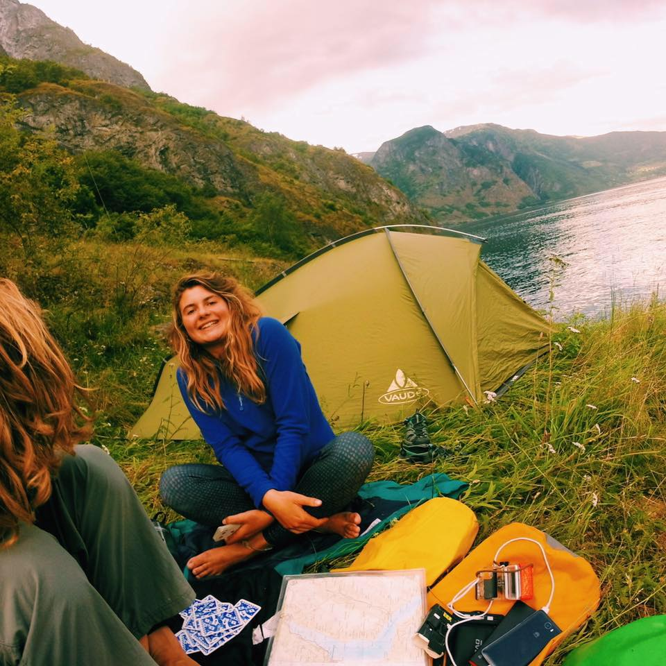

About Us
Ethical Hackers is an initiative dedicated to reducing waste in the city of Southampton.
What We Do
We're here to help you cut consumption in Southampton.
The average home in the UK throws out over one tonne of rubbish every year. We aim to reduce this number, starting with Southampton, by helping you find ways you can help to cut down on waste.
On Ethical Hackers, you can find the location of charity shops, water fountains on campus, and much more, along with ideas on easy ways to reduce waste in your daily life.
If you have any feedback for us, or if there's anything you'd like to see us cover, get in touch with us using the contact form at the top.
Who We Are
We are a team of three students from the University of Southampton dedicated to reducing waste in our city.
We built this website with the goal of using technology to help the environment and the city we live in.

Lucy studies Marine Biology with Oceanography at the University of Southampton.
Gemma studies Biomedical Sciences at the University of Southampton.
Phoebe studies English at the University of Southampton.